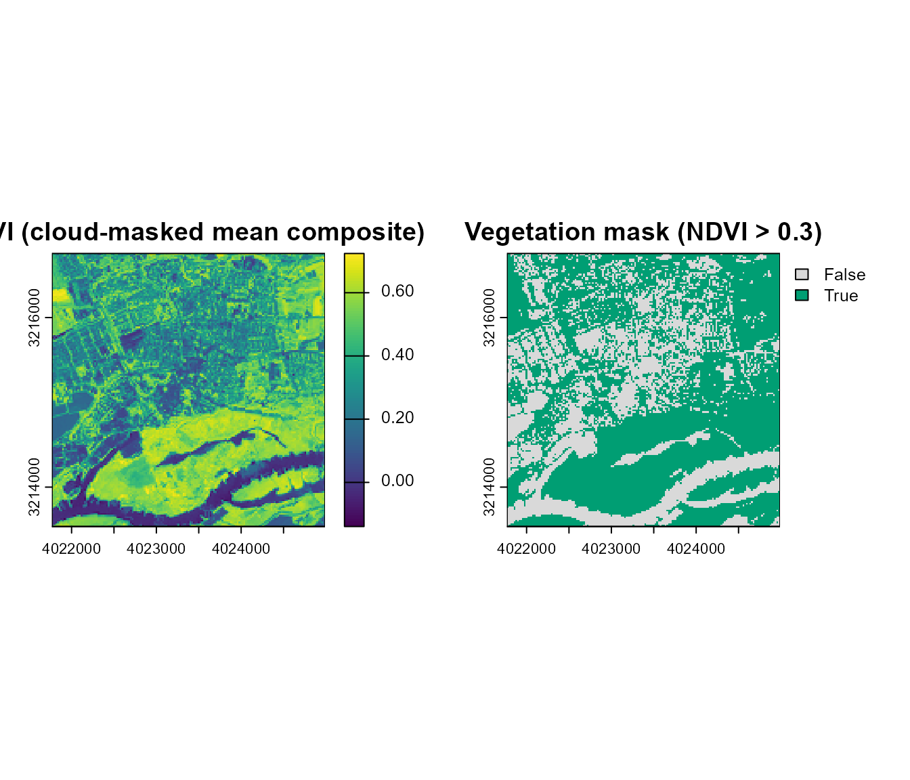
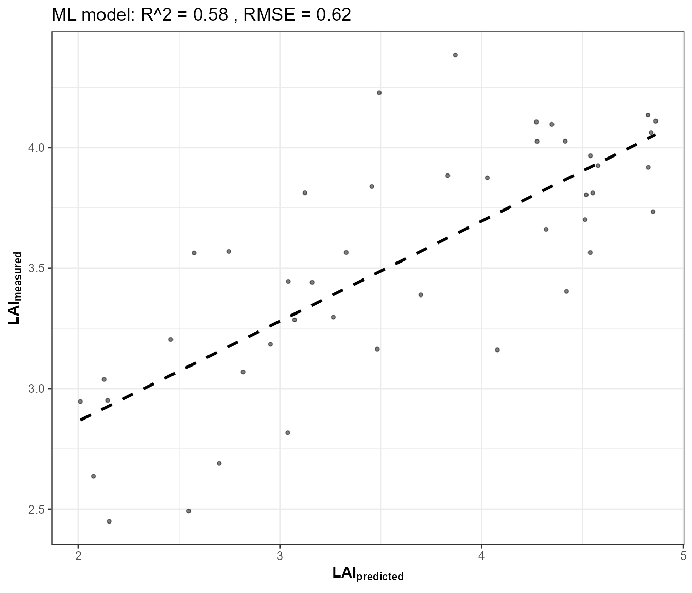
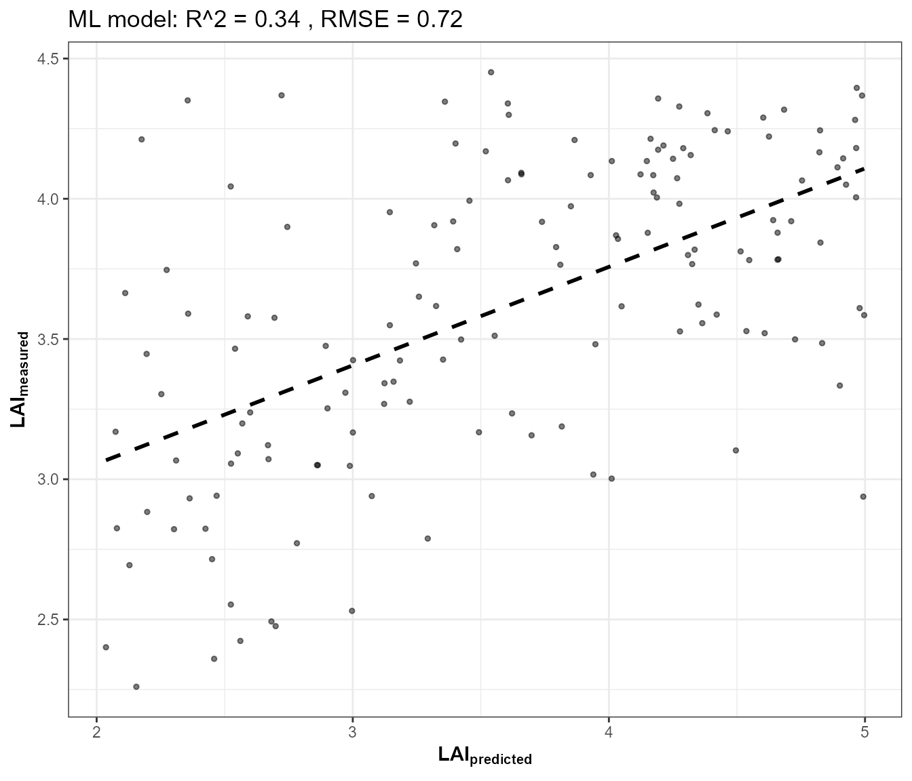
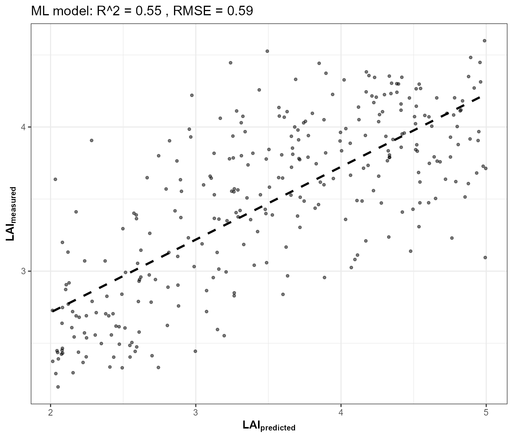
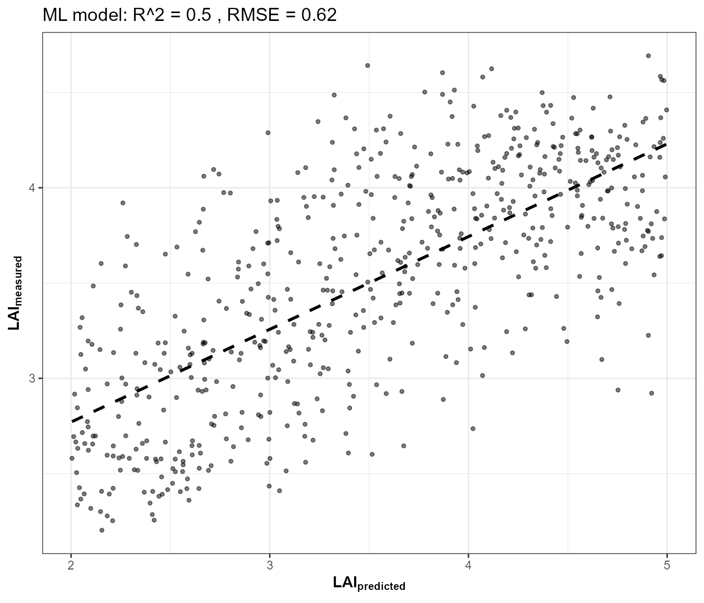
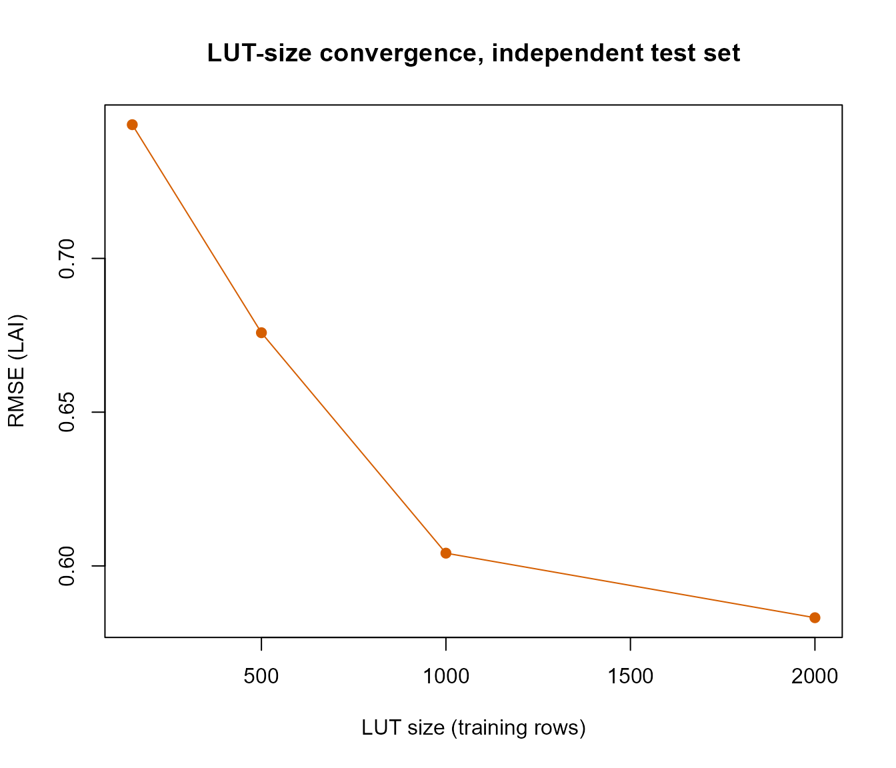
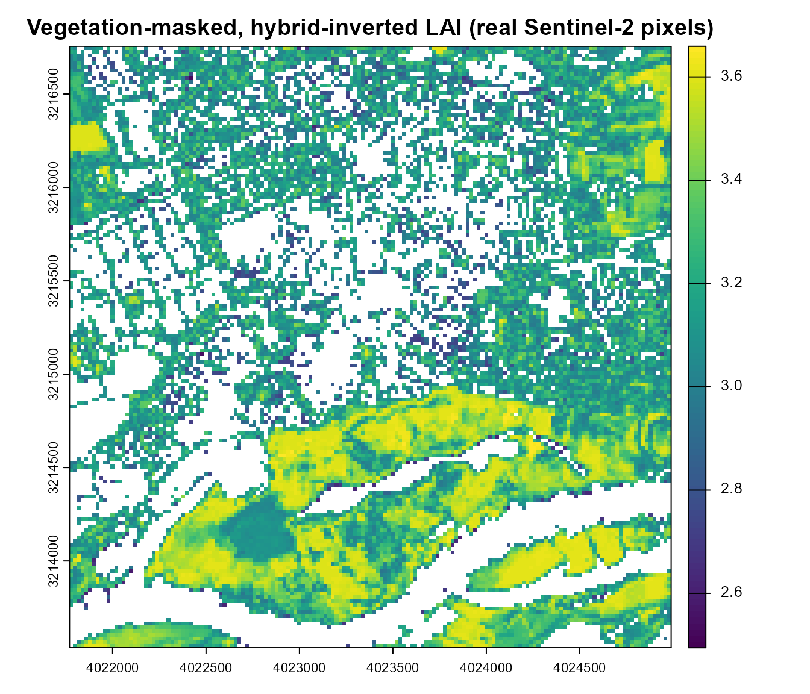

15. From Satellite Reflectance to Vegetation Traits: Real EO Application
t15-real-eo-application.RmdEvery tutorial so far worked on simulated spectra. This closing page applies the exact same hybrid-inversion framework (Tutorials 10-13) to a real Sentinel-2 image, retrieved live via STAC (SpatioTemporal Asset Catalog) – and, unlike Tutorial 03’s single-pixel SPART geometry sweep or Tutorial 14’s single-spectrum test set, produces a genuine 2D spatial map, not a point value.
Sentinel-2 image (STAC)
|
v
Cloud/shadow mask (SCL, inside get.sentinel2_cube())
|
v
Vegetation mask (NDVI threshold)
|
v
Realistic, sufficiently large LUT (real geometry, variable soil)
|
v
Domain-applicability check (real reflectance vs. LUT coverage)
|
v
Hybrid inversion (trained on the LUT)
|
v
Masked LAI map, NA outside vegetation -- not a validated productThis restructures the previous version of this page on purpose: the mask, the LUT’s realism, and the domain check now all happen before inversion, not as a discussion tacked on after a map was already shown.
1. Retrieve a real Sentinel-2 image via STAC
ToolsRTM::get.satellite_collection() searches and signs
a STAC collection (Microsoft Planetary Computer by default);
get.sentinel2_cube() builds an actual gridded raster cube
from it over a chosen area/date range (gdalcubes under the
hood). Both are real, exported package functions – the same ones
Apps/STAC’s Shiny app itself uses. Wrapped in
tryCatch() since live network/STAC access is inherently
less reliable in a documentation build than a local simulation:
retrieval <- tryCatch({
library(sf)
# Wageningen, NL -- open farmland, a plausible study area for this package
pt <- st_point(c(5.6667, 51.9667)) |> st_sfc(crs = 4326)
scenario <- st_as_sf(data.frame(id = 1), geometry = st_sfc(pt[[1]], crs = 4326))
sc <- get.satellite_collection(scenario = scenario, collection = "sentinel-2-l2a",
cloud_server = "microsoft", n.limit = 20,
date_range = c("2024-06-01", "2024-08-31"),
cloud_threshold = 20, buffer_size = 1500)
bbox <- get_bounding_box(scenario, 1500)
shape <- st_as_sf(data.frame(id = 1), geometry = st_sfc(st_polygon(list(rbind(
c(bbox["xmin"], bbox["ymin"]), c(bbox["xmin"], bbox["ymax"]),
c(bbox["xmax"], bbox["ymax"]), c(bbox["xmax"], bbox["ymin"]),
c(bbox["xmin"], bbox["ymin"])))), crs = 4326))
cube <- get.sentinel2_cube(sc[[1]], shape = shape, date_range = c("2024-06-01", "2024-08-31"),
aggregation_method = "mean", get.dataset = FALSE)
# Real sun geometry for this acquisition, from the STAC item's own metadata
# (df.data -- the second element get.satellite_collection() returns) --
# used below to build a more realistic training LUT instead of a default
# fixed angle.
df_meta <- sc[[2]]
list(ok = TRUE, cube = cube, df_meta = df_meta)
}, error = function(e) list(ok = FALSE, msg = conditionMessage(e)))
if (!retrieval$ok) {
cat("STAC retrieval skipped -- no network/STAC access from this build environment (",
retrieval$msg, "). Everything below needs `retrieval$cube` and is skipped too.\n")
}
if (retrieval$ok) {
cube <- retrieval$cube
cat("Real Sentinel-2 cube retrieved:", paste(dim(cube), collapse = " x "),
"(rows x cols x bands), bands:", paste(names(cube), collapse = ", "), "\n")
}
#> Real Sentinel-2 cube retrieved: 161 x 161 x 11 (rows x cols x bands), bands: B02, B03, B04, B05, B06, B07, B08, B8A, B11, B12, SCLget.sentinel2_cube() already masks clouds/shadows/snow
via the SCL band and mean-aggregates every cloud-free date in range onto
one 20m grid – one real, composited scene, not a single tile from a
single overpass.
2. A vegetation mask, before any inversion
Inverting a trait model on every pixel – bare soil, roads, water – produces a number for all of them, and that number is meaningless outside vegetation. Build and apply an NDVI-based mask first:
if (retrieval$ok) {
refl_cube <- cube[[c("B02","B03","B04","B05","B06","B07","B08","B8A","B11","B12")]] / 10000
ndvi <- (refl_cube[["B08"]] - refl_cube[["B04"]]) / (refl_cube[["B08"]] + refl_cube[["B04"]])
names(ndvi) <- "NDVI"
# NDVI > 0.3 is a common, but application-dependent, vegetation threshold
# (dense crops/forest often clear 0.5+; this is deliberately permissive
# enough to include sparser/early-season vegetation too). A real
# operational workflow would tune this per land-cover context, and could
# combine it with the cube's own SCL classes for a stricter mask.
veg_mask <- ndvi > 0.3
op <- par(mfrow = c(1, 2))
plot(ndvi, main = "NDVI (cloud-masked mean composite)")
plot(veg_mask, main = "Vegetation mask (NDVI > 0.3)", col = c("grey85", "#009E73"))
par(op)
cat("Vegetation pixels:", round(100 * sum(values(veg_mask), na.rm = TRUE) / sum(!is.na(values(veg_mask))), 1), "% of the scene\n")
}
#> Vegetation pixels: 64 % of the scene3. A realistic, sufficiently large training LUT
n_samples = 150 (this page’s own previous size) is a
demo size, not a scientific one – and size alone isn’t the whole story
either. A larger and better-constrained LUT can improve
inversion by providing denser coverage of the relevant parameter space;
it does not automatically improve inversion just by being
larger (100,000 badly- parameterized simulations can be worse
than 5,000 well-designed ones). This LUT improves on three fronts at
once, not just row count:
- Real acquisition geometry: sun zenith from this scene’s own STAC metadata, not this package’s generic fixed default.
-
Variable soil, not one flat
rsoil = 0.15for every row – sampled brightness across a realistic range (Tutorial 03’s BSM sensitivity section covers the physics). - A larger sample count – 2000 rows here (up from 150), the largest practical for this page’s build time; Section 4 shows explicitly why that specific number is defensible, not arbitrary.
if (retrieval$ok) {
n_samples <- 2000
LUT <- as.data.frame(getLUT(inputs = ToolsRTM::inputsPROSAIL, nLUT = n_samples, setseed = 1))
wl <- 400:2500
# Real sun zenith for this acquisition (falls back to the package default
# if the STAC item didn't carry a usable zenith field).
real_tts <- suppressWarnings(mean(as.numeric(retrieval$df_meta$zenith), na.rm = TRUE))
if (is.finite(real_tts)) LUT$tts <- real_tts
# Variable soil brightness (BSM-style range, not one flat value) --
# see Tutorial 03 Section 3.3 for the physical parameters.
set.seed(2)
soil_brightness <- runif(n_samples, 0.05, 0.30)
sim_refl <- t(sapply(seq_len(n_samples), function(i) {
rsoil_i <- rep(soil_brightness[i], length(wl))
foursail(inputLUT = LUT[i, ], rsoil = rsoil_i, LeafModel = "PROSPECT-PRO")$rsot
}))
refl_X <- as.data.frame(sim_refl); colnames(refl_X) <- paste0("X", wl)
refl_X <- cbind(id = seq_len(n_samples), refl_X)
se2a_full <- suppressMessages(get.spectra.convolved(rfl = refl_X, sensor = "Sentinel2a", plot.spectra = FALSE))
names(se2a_full) <- c("id","B1","B2","B3","B4","B5","B6","B7","B8","B8A","B9","B10","B11","B12")
keep <- c("B2","B3","B4","B5","B6","B7","B8","B8A","B11","B12") # matches the cube's 10 bands
real_names <- c("B02","B03","B04","B05","B06","B07","B08","B8A","B11","B12")
se2a <- se2a_full[, keep]; names(se2a) <- real_names
train_df <- cbind(LUT, se2a)
cat("Real acquisition sun zenith used for training LUT:", round(real_tts, 1), "deg\n")
}4. Does LUT size actually matter here? A convergence check, not an assertion
Rather than assert that 2000 is enough, test it: train on several LUT sizes, evaluate every one against the same independent synthetic test set (not the real image – that would conflate two different questions), and look at where the curve actually flattens:
if (retrieval$ok) {
test_lut <- as.data.frame(getLUT(inputs = ToolsRTM::inputsPROSAIL, nLUT = 300, setseed = 999))
test_lut$tts <- LUT$tts[1]
set.seed(3)
test_soil <- runif(300, 0.05, 0.30)
test_refl <- t(sapply(seq_len(300), function(i) {
foursail(inputLUT = test_lut[i, ], rsoil = rep(test_soil[i], length(wl)), LeafModel = "PROSPECT-PRO")$rsot
}))
test_refl_X <- as.data.frame(test_refl); colnames(test_refl_X) <- paste0("X", wl)
test_refl_X <- cbind(id = seq_len(300), test_refl_X)
test_se2a_full <- suppressMessages(get.spectra.convolved(rfl = test_refl_X, sensor = "Sentinel2a", plot.spectra = FALSE))
names(test_se2a_full) <- names(se2a_full)
test_se2a <- test_se2a_full[, keep]; names(test_se2a) <- real_names
sizes <- c(150, 500, 1000, 2000)
size_results <- do.call(rbind, lapply(sizes, function(n) {
sub_df <- cbind(LUT[seq_len(n), ], se2a[seq_len(n), ])
fit_n <- get.inversion(data = sub_df, depVar = "LAI", inputs = real_names,
algorithm = "RF", n.samples = nrow(sub_df), seed = 42)
pred_n <- as.numeric(predict(fit_n$model, newdata = cbind(test_lut, test_se2a)[, c("LAI", real_names)]))
obs_n <- test_lut$LAI
data.frame(n = n, R2 = 1 - sum((obs_n - pred_n)^2) / sum((obs_n - mean(obs_n))^2),
RMSE = sqrt(mean((obs_n - pred_n)^2)))
}))
}



if (retrieval$ok) {
knitr::kable(size_results, digits = 3, row.names = FALSE)
plot(size_results$n, size_results$RMSE, type = "o", pch = 19, col = "#D55E00",
xlab = "LUT size (training rows)", ylab = "RMSE (LAI)", main = "LUT-size convergence, independent test set")
}
Accuracy improves with LUT size but with diminishing returns – most
of the gain shows up well before 2000 rows. This is exactly the nuance
worth being explicit about: the improvement here comes from
denser coverage of the same, already-reasonable parameter space
(real geometry, variable soil, inputsPROSAIL’s trait
ranges) as size grows, not from size alone – the same 2000 rows drawn
from a badly-chosen parameter space would not show this curve.
5. Domain-applicability check: does the real scene actually look like the LUT?
A trained model will return a prediction for any input, including reflectance combinations nothing in the training LUT resembles – a real, silent failure mode worth surfacing rather than hoping it doesn’t happen. Compare the real scene’s per-band reflectance range against the simulated LUT’s:
if (retrieval$ok) {
pix_df <- as.data.frame(refl_cube, xy = TRUE, na.rm = FALSE)
ok_rows <- complete.cases(pix_df[, real_names])
domain_tbl <- do.call(rbind, lapply(real_names, function(b) {
lut_range <- range(se2a[[b]])
real_vals <- pix_df[[b]][ok_rows]
data.frame(band = b, lut_min = lut_range[1], lut_max = lut_range[2],
pct_real_outside = round(100 * mean(real_vals < lut_range[1] | real_vals > lut_range[2]), 1))
}))
knitr::kable(domain_tbl, digits = 4, row.names = FALSE)
# Flag any pixel with at least one band outside the LUT's simulated range --
# these predictions are extrapolations, not interpolations.
out_of_domain <- rep(FALSE, nrow(pix_df))
for (b in real_names) {
rng <- range(se2a[[b]])
out_of_domain <- out_of_domain | (pix_df[[b]] < rng[1] | pix_df[[b]] > rng[2])
}
out_of_domain[!ok_rows] <- NA
cat("Vegetation pixels with at least one band outside the LUT's simulated range:",
round(100 * mean(out_of_domain[ok_rows & values(veg_mask)[ok_rows] %in% TRUE], na.rm = TRUE), 1), "%\n")
}
#> Vegetation pixels with at least one band outside the LUT's simulated range: 100 %6. A masked, hybrid-inverted LAI map
Fit on the full 2000-row LUT from Section 3, predict on every pixel, then discard predictions outside the vegetation mask (Section 2) – the whole reason for building the mask before this step:
if (retrieval$ok) {
fit <- get.inversion(data = train_df, depVar = "LAI", inputs = real_names,
algorithm = "RF", n.samples = nrow(train_df), seed = 42)
pred_lai <- rep(NA_real_, nrow(pix_df))
pred_lai[ok_rows] <- as.numeric(predict(fit$model, newdata = pix_df[ok_rows, real_names]))
veg_vals <- values(veg_mask)[, 1]
pred_lai[!(veg_vals %in% TRUE)] <- NA # mask out non-vegetation, including NA-NDVI pixels
lai_rast <- refl_cube[["B04"]] # reuse its grid/extent/crs
values(lai_rast) <- pred_lai
names(lai_rast) <- "LAI_pred"
plot(lai_rast, main = "Vegetation-masked, hybrid-inverted LAI (real Sentinel-2 pixels)")
cat("Predicted LAI range, vegetation pixels only:",
paste(round(range(pred_lai, na.rm = TRUE), 2), collapse = " to "), "\n")
}
#> [1] "processing hybrid approach using Random Forest ..."
#> -0.03662417 0.01
#> 0.06540701 0.01
#> -0.0129615 0.01

#> Predicted LAI range, vegetation pixels only: 2.49 to 3.66This is a hybrid RTM-derived LAI estimate, not a validated product. Its accuracy has not been checked against field measurements or an established satellite LAI product (e.g. Copernicus Global Land, MODIS LAI) – doing that is the actual next step before treating any of these numbers as ground truth, not something this page’s simulated-LUT training can substitute for.
7. What’s still a real gap, restated after doing the work above
Sections 2-5 close several gaps the previous version of this page only described after the fact. What’s left genuinely open:
- View/relative-azimuth geometry (
tto/psi) still uses this package’s fixed defaults, not the real per-scene values –tts(sun zenith) is now real (Section 3), but Sentinel-2’s near-nadir viewing geometry makes the view-angle simplification much smaller in practice than the sun-angle one would have been. - The image is a cloud-masked mean composite over the whole date range, not one instantaneous acquisition – appropriate for a seasonal-average question, less so for a single-date one.
- No field or reference-product validation (Section 6’s caution).
None of this invalidates the framework – it’s exactly why Tutorials 05 (LUT design), 10 (sensitivity – which traits actually matter for which bands), and 03 (soil realism) matter before trusting a real-world inversion result, and why operational retrieval systems calibrate LUT ranges against the actual study area and validate against independent data rather than using generic defaults unmodified and unchecked.
Take-home
Every stage from Tutorial 01 through this page is a real, runnable piece of the same chain – from one hand-written trait row to a real satellite-derived trait map, now with the mask, LUT realism, and domain check happening before inversion rather than as an afterthought. Two pages close out the series from here:
- Tutorial 16 – MARMIT + SPART: whether the soil-moisture realism this page’s LUT training now partly includes (Section 3’s variable soil brightness) actually survives to TOA, answered directly rather than assumed.
- Tutorial 17 – the same real-EO approach as this page, extended to a real multi-date time series over a forest site, comparing NDVI against hybrid-inverted Cab/LAI/EWT through a growing season.
See the Reference manuals and deep dives section of
this site’s Articles menu for the comprehensive, all-12-algorithm
reference manual (ToolsRTM, Getting-LUTs,
InversionOpt vignettes) this tutorial series complements
rather than replaces.